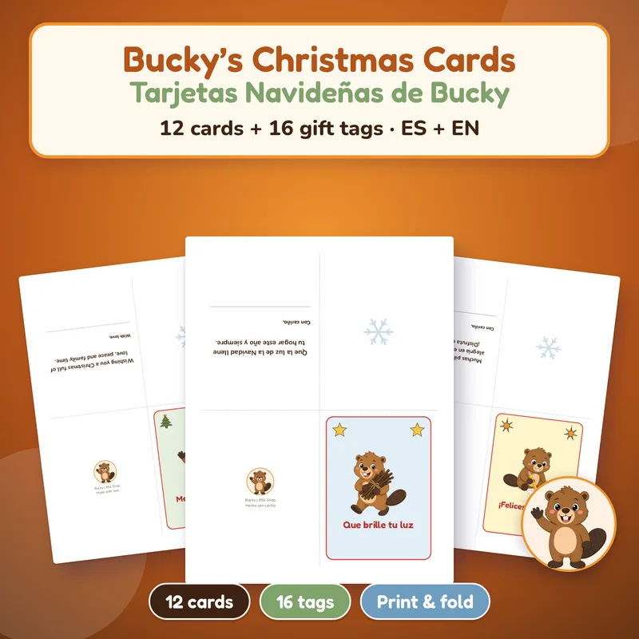

Home › Christmas Eve printables
Printable Christmas Eve activities for family night
Make Christmas Eve (Thursday, December 24, 2026) easier: last-minute cards and gift tags, quiet games while you wait, coloring and a short story before the movie. Instant PDFs in English and Spanish, US Letter and A4.

Free Christmas Mini Kit
Free mini kit for Christmas Eve at home (personal use only): charades, Would You Rather, Christmas Scattergories, a folding card with 8 gift tags, a coloring page and a 2027 mini calendar. English and Spanish.
FREEGet it free
Bucky Christmas Cards
12 folding Christmas cards with a message inside + 16 To/From gift tags for last-minute Christmas Eve wrapping. English and Spanish files.
$3.99 USDBuy and downloadWhat to print for Christmas Eve (Thursday, December 24, 2026)
Christmas Eve is the night dinner runs late, a few gifts still need tags, and kids ask "is it time yet?" every ten minutes. Printable activities fill those gaps without a store run: last-minute cards and tags, a quiet game after dinner, coloring and stories while you wait for the movie to start.
- Free Christmas Mini Kit: personal-use starter with charades, Would You Rather, Christmas Scattergories, a folding card, 8 gift tags, a coloring page and a 2027 mini calendar — enough for one evening at home.
- Christmas cards + gift tags ($3.99): 12 folding cards with a message inside and 16 To/From tags. Print on cardstock the afternoon of the 24th for the gifts you forgot to wrap.
- Christmas Party Games ($9.99): 13 games / about 70 pages per language for a calm round after dinner or while presents are opened. Personal use for family and friends at home.
- Kids Activity Mega Pack ($7.99): 60 screen-free pages so younger kids have mazes and coloring while adults finish cooking.
- Bucky Storybooks ($4.99) and coloring pages ($2.99): a short read-aloud plus thick-line coloring before the Christmas movie starts.
A simple Christmas Eve family plan
- Afternoon: print cards and tags on cardstock; cut tags and finish wrapping.
- While dinner cooks: hand kids a coloring page or a short story so the kitchen stays calm.
- After dinner: one short game (charades or Would You Rather from the free kit, or a round from the 13-game set) before gifts or the movie.
- Movie night: keep a spare coloring page and crayons on the coffee table for anyone who fidgets.
- Print at 100% ("Actual size"). Cardstock helps for cards and tags; plain paper is fine for games and coloring.
Looking for more kids winter-break stacks? See Christmas activities for kids. Full party-night game lists: Christmas party games. Matching card designs: printable Christmas cards.
¿Lo buscas en español? Mira las tarjetas navideñas gratis y las manualidades navideñas para niños.
More printables for a calm Christmas Eve

Christmas Party Games
13 printable Christmas games for a quiet round after dinner or while gifts are opened: trivia, bingo, charades and more. Personal use at home with family and friends. English and Spanish.
$9.99 USDBuy and download
Kids Activity Mega Pack Printable
60 screen-free pages: mazes, coloring, dot-to-dot, picture sudoku and word search for kids who need something calm while adults finish cooking or wrap. Ages about 4 to 9. Personal use or one classroom.
$7.99 USDBuy and download
Bucky Storybooks: 3 Stories + Coloring | Cuentos de Bucky (EN/ES Printable)
3 gentle Bucky stories (8 pages each with read-aloud text and discussion questions) plus 24 matching coloring pages. Ages about 3 to 7. A quiet Christmas Eve read before the movie. Print at home. English and Spanish.
$4.99 USDBuy and download
Bucky Coloring Pages for Kids
10 thick-line Bucky coloring pages plus a color cover. Easy calm-down activity while everyone waits for dinner or the tree lights. English and Spanish, Letter and A4.
$2.99 USDBuy and download
All Holidays Mega Pack Printable Bundle
Every party from October to December, done!
$29 USDBuy and downloadQuestions
When is Christmas Eve in 2026?
Christmas Eve is Thursday, December 24, 2026. Christmas Day is Friday, December 25, 2026.
What should I print for Christmas Eve at home?
Start with the free Mini Kit (games, a card, tags and a coloring page). Add the cards+tags set if you still need to wrap, and a short game or story for after dinner.
Is there a free printable for Christmas Eve?
Yes. The Christmas Mini Kit is free for personal use at home: charades, Would You Rather, Christmas Scattergories, a card, 8 gift tags, a coloring page and a 2027 mini calendar.
Can I use these in a classroom?
Most kits on this page are for personal use at home. The Kids Activity Mega Pack allows personal use or one classroom. Bucky coloring pages may be printed for home or your classroom. The free Mini Kit, Christmas cards, Christmas Party Games and Bucky Storybooks are for personal / home use (storybooks: print at home). The Mega Pack allows personal and single-classroom use. Please don't resell or share the files.
What ages are these for?
Coloring and storybooks fit about ages 3 to 7. The Mega Pack fits about 4 to 9. Party games and cards work for mixed ages at a family table.
Is anything shipped?
No. These are digital PDFs you download and print at home or at a copy shop.
¿Prefieres en español? Mira posadas y Navidad, tarjetas navideñas gratis y ideas para intercambio de regalos.